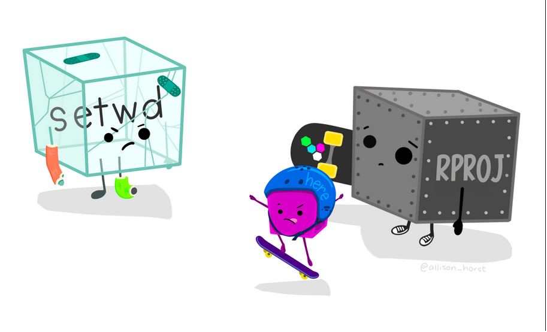

Semaine 7
Objectif de cette semaine:
Comprendre certains algorithmes de base déjà disponibles dans R.
Lors des lectures et des exercices, essayez de penser aux différentes fonctions qui pourraient être utiles et tenter de trouver leur nom.
1. Lectures
Programmer avec R
1.1 Lire le chapitre 7 (pages 117-165) du livre Programmer avec R.
Vous pouvez télécharger le livre en cliquant sur le titre ci-haut ou en vous rendant sur la page des ressources. Pour télécharger le livre et tous les fichiers d’exercices et de code sur la page officielle.
Chapitre 7 - Fichiers
Dans le chapitre 7, l’auteur mentionne de vous pratiquer avec plusieurs fichiers. Au lieu de regarder les lignes dans le livre uniquement, vous pouvez télécharger le fichier et l’utiliser dans RStudio. Si vous voulez vous pratiquer sur votre ordinateur, vous devez ouvrir le fichier donnees.R directement avec RStudio ou le télécharger dans votre projet que vous avez créé pour le cours afin que le fichier soit répertorié dans l’interface.
Je vous suggère fortement d’accompagner votre lecture en analysant et essayant de rouler le code de façon proactive au lieu de regarder passivement le code. Cela rendra le tout plus agréable et plus instinctif à force de répéter les commandes que nous utilisons plus souvent.
Il est tout à fait normal que certaines notions vous apparaissent compliquées. Certaines notions sont plus avancées, donc ne vous attardez pas trop si jamais il y a certaines parties du document qui sont floues pour vous.
Le jeu de données à utiliser pour les exercices:
🎉 Résumé du chapitre 🎉
Bonne nouvelle, l’auteur du livre a mis en ligne une vidéo résumant le chapitre que vous pouvez visionner! La qualité de la vidéo est aussi excellente que celle du livre!
J’ajoute également le résumé du chapitre 2 à nouveau ici comme il portait sur les algorithmes et l’algorithmique
Essential Algorithms par Rod Stephens (2019)
La nouvelle version du livre disponible gratuitement et téléchargeable se trouve juste ici.
IVous devrez probablement configurer votre proxy afin d’accéder aux ressources électroniques hors-campus.
Cliquez sur ce lien pour obtenir les instruction de configuration du proxy.
⚠️ Si jamais vous n’arrivez pas à y avoir accès, écrivez-moi sur Ed et nous nous arrangerons autrement.
1.2.1 Lire le chapitre 6
Il y a deux passages à lire:
Les pages 167-171. Vous pouvez également lire la section qui suit sur l’algorithme Bubblesort.
Optionnels sont les algorithmes \(O(NlogN)\) qui incluent les algorithmes Countingsort, Pigeonhole Sort et Bucketsort.
La section Summary à la page 197-198.
1.2.2 Lire le chapitre 7
Vous pouvez lire seulement les pages 201–204 sur les algorithmes Linear Search, Binary Search et le début d’Interpolation Search.
1.2.3 Lire le chapitre 9
Vous pouvez lire seulement les pages 227–232 qui introduisent les algorithmes récursifs.
2. Consulter les consignes pour le travail de mi-session
Prenez le temps de consulter les consignes avant la classe pour pouvoir les poser pendant le cours avant qu’on ne se quitte pour la semaine de lectures!
Thread pour le travail de mi-session
Petit clin d’oeil pour le travail de session:

Figure par @allison_horst (CC-BY)
Bonne semaine! ✌️